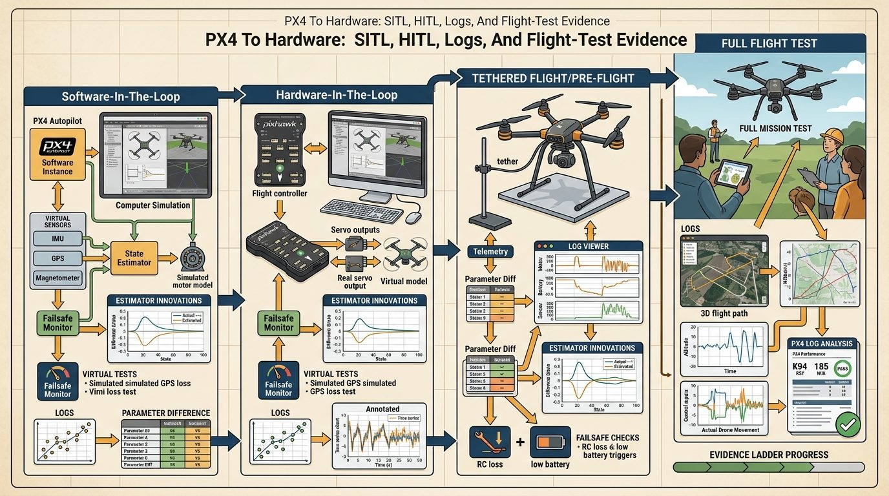
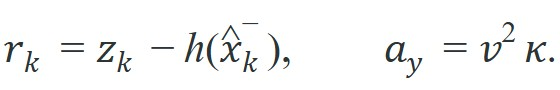
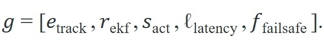
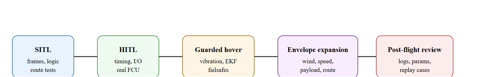

"A drone is not airworthy because it flew once; it is airworthy because the same fault was interrogated in SITL, in HITL, and in the logs."
A Systems-Minded Embodied AI Agent
A delivery drone completed 200 Software-In-The-Loop (SITL) missions without a single fault, then crashed on its third real flight because a vibration-induced divergence of its Extended Kalman Filter (EKF), the recursive estimator that fuses sensor readings into a single state belief, was never tested in hardware. The gap between simulation confidence and physical reality is the most dangerous moment in aerial embodied AI deployment. As autonomous drones move from research labs into warehouses, farms, and emergency response, the ability to build a credible evidence ladder, SITL to Hardware-In-The-Loop (HITL) to guarded flight to post-flight log review, separates systems that scale safely from ones that fail expensively. You will learn to construct and read that ladder for PX4-based stacks.

This section assumes you can formulate trajectory commands and understand GPS-denied state estimation from section 47.7. The evidence-ladder approach introduced here is extended in section 53.4, which covers safety monitors and fallback trigger design in full-system deployments, and in section 53.6, which applies the same promotion-artifact discipline to robustness evaluation across sensor-degraded conditions.
A common assumption is that a high number of clean SITL runs proves a drone stack is ready for hardware, and that HITL is just a formality to confirm what simulation already showed. This is wrong in the embodied AI context because SITL and HITL test entirely different failure surfaces: SITL exposes software logic errors in a physics-simplified loop, while HITL exposes real flight-controller timing, interrupt latency, and estimator behavior that cannot be emulated. A stack with 1000 clean SITL missions can still fail on its first HITL run due to a 12 ms timing slip the simulator never introduced. The correct mental model is that each stage in the promotion ladder adds a new class of physical evidence, not a higher confidence score on the same evidence.
A policy that works in simulation but fails on hardware is not a policy; it is an aspiration that has never met physics.
Every time a PX4 drone lifts off, it silently asserts six things it has never proven together in the air. The crash that ends the flight is usually the one claim nobody thought to interrogate. Sensing, state estimation, planning, control, safety, and evidence logging all sit on the single flight-readiness path sketched in Figure 47.8.1, and the rest of this section walks that path stage by stage. A PX4-based drone stack usually makes at least six distinct claims. First, the mission logic produces commands in the right frame and units. Second, the estimator keeps a believable state in the intended operating domain. Third, the low-level controller can track the commanded motion without persistent saturation. Fourth, the communication path between companion computer and flight controller meets the timing budget. Fifth, the safety monitor triggers the intended fallback. Sixth, the logs and replay tools are rich enough to explain a failure after the fact.
Those claims should be promoted stage by stage. SITL is where you catch frame mistakes, route logic bugs, and bad assumptions about the controller interface. HITL is where timing, estimator plumbing, and real flight-controller behavior become visible. Tethered or guarded hover tests are where vibration, battery sag, magnetic disturbance, prop wash, and sensor placement begin to rewrite the story. To see what skipping a stage can cost, consider one documented industrial case. It ran 847 clean SITL missions, skipped HITL entirely, and lost the vehicle on flight 2 when a 12 ms timing slip made the estimator apply a stale correction at exactly the wrong moment. Two days of HITL would likely have caught it, yet recovering the airframe and repeating certification took six weeks. This is what makes the promotion ladder matter in typical field deployments: two days of HITL vs. six weeks of recovery.
Do not promote a drone stack to the next stage because the previous stage "looked good." Promote it only when the previous stage produced the exact evidence artifact that the next stage would need if it went wrong.
If the promotion ladder decides when a stack advances, a handful of small diagnostics decide whether each stage should still trust the vehicle at all. The most useful equations in deployment work are not fancy control laws. They are the diagnostics that tell you whether the stack still deserves trust. Two examples appear in almost every PX4 debugging session:

The innovation residual $r_k$ says whether the estimator's belief and the incoming sensor measurement still agree. The lateral acceleration relation $a_y = v^2 \kappa$ says whether a planned turn is physically credible for the airframe and speed envelope. When a Visual-Inertial Odometry (VIO)-assisted mission drifts, or a trajectory asks for more curvature than the aircraft can safely track, these simple quantities fail before the mission-level score fails.
The innovation residual matters in embodied AI because a drone cannot pause mid-flight to ask whether its position belief is correct. When $r_k$ grows large, the EKF has already begun applying corrections to a state that no longer matches physical reality: the controller then tracks a ghost trajectory, and the airframe responds to commands that assume a position it does not occupy. In cluttered indoor or GPS-denied environments, this divergence typically causes collisions within seconds, not minutes. The counterintuitive part is that a larger Kalman gain (the weighting factor that decides how much a new sensor reading should move the state estimate), which looks like the filter "working harder," actually accelerates the crash in this failure mode: each aggressive correction drags the state estimate further from reality, so the drone acts with more confidence on information that is more wrong.
Mechanically, the EKF predicts the next measurement from the current state and the sensor model $h(\hat x_k^-)$, then takes the residual as the signed gap between that prediction and the actual reading $z_k$, and weights it by the Kalman gain to correct the state. A persistently large residual points to a wrong prediction model, delay compensation, or sensor calibration, with the filter amplifying the error instead of damping it.
Think of the innovation residual like a chef tasting a sauce and comparing it to memory. If the sauce tastes roughly as expected, the chef makes a small correction and moves on. If the gap between expectation and reality is large and persistent, the chef is either misremembering the recipe or has the wrong ingredient entirely, and small adjustments make the final dish worse, not better. The EKF works the same way: when $r_k$ stays small, gentle corrections keep the state estimate on track; when $r_k$ grows large, the filter is correcting toward a wrong prediction, and each correction steers the drone further from where it actually is.
A practical flight-readiness gate can therefore be written as a vector of measurable conditions:

The gate passes only if tracking error stays bounded, estimator residuals stay healthy, actuator saturation stays rare, link latency remains inside the offboard budget, and failsafes either do not trigger or trigger exactly as designed during test scenarios.
Trace the residual $r_k = z_k - h(\hat x_k^-)$ for a guarded-hover frame. Suppose the VIO sensor reports an x-position measurement $z_k = 2.41$ m, while the EKF predicts $h(\hat x_k^-) = 2.18$ m from its current state. Then $r_k = 2.41 - 2.18 = 0.23$ m. The filter normalizes this by the innovation standard deviation; if the predicted measurement variance gives $\sigma = 0.20$ m, the test ratio is $(r_k/\sigma)^2 = (0.23/0.20)^2 = 1.32$, which exceeds the 1.0 healthy threshold, so this frame flags as a fusion fault. Now repeat with corrected delay compensation: the prediction tightens to $h(\hat x_k^-) = 2.36$ m, giving $r_k = 0.05$ m and a test ratio of $(0.05/0.20)^2 = 0.0625$, safely below 1.0. The single number that moved from 1.32 to 0.06 is exactly what a Flight Review plot shows you, and exactly what EKF2_EV_DELAY calibration is fixing (the tip later in this section walks through setting that parameter directly).

Those gate quantities do not measure themselves; each one is surfaced by a specific tool in the PX4 ecosystem, so the ladder is only as trustworthy as the tooling that produces its evidence. The practical tool stack for this section is: PX4, QGroundControl, MAVLink (the lightweight message protocol that carries commands and telemetry between the flight controller and the companion computer or ground station), MAVSDK (a client library that wraps MAVLink into higher-level mission and telemetry calls), ROS 2 uXRCE-DDS, Flight Review or Data Comets, Gazebo. The point is not to name a fashionable stack. The point is to assign each tool a job in the evidence ladder: PX4 exposes controller modes and failsafes, QGroundControl exposes parameters and health checks, MAVLink and MAVSDK expose command and telemetry contracts.
So far: PX4 supplies the flight-controller modes and failsafes, QGroundControl exposes parameters and health checks, and MAVLink/MAVSDK carry the command and telemetry contracts between the companion computer and the flight controller; the next two tools below extend this same evidence chain into companion-computer timing and post-flight log analysis.
ROS 2 exposes companion-computer timing, and the log-analysis tools expose what the vehicle actually believed and did.
| Stage | Main question | Evidence to save |
|---|---|---|
| SITL | Are frames, commands, and mission logic correct? | Mission script, simulator seed, route outcomes, and offboard mode traces. |
| HITL | Does the real flight controller preserve timing and mode behavior? | Mode transitions, command latency, estimator health, and parameter snapshot. |
| Guarded hover | Can the vehicle remain stable with the real airframe, sensors, and vibration? | Innovation residuals, vibration metrics, actuator saturation, and failsafe results. |
| Envelope expansion | Which wind, payload, and route conditions remain inside the safe operating envelope? | Per-flight envelopes, disturbance labels, recovery traces, and blocked conditions. |
| Post-flight review | Can the team explain every anomaly and turn it into a reusable test? | Annotated log review, replay case, mitigation note, and promotion decision. |
Stress the system with frame-sign errors, estimator resets, vibration, magnetometer interference, motor imbalance, battery sag, payload shift, wind gusts, stale maps, and companion-computer latency. These are not rare corner cases. They are the normal reasons a beautiful simulation result becomes an unsafe aircraft.
A warehouse-inspection drone may pass SITL and HITL, then fail its first guarded hover because VIO timestamps lag just enough to produce innovation spikes during yaw motion. The right response is not "the model failed." The right response is to save the log, pin the failure to timing plus estimator fusion, and convert it into a permanent gate before the next flight.
Zipline, which has flown millions of autonomous medical-supply deliveries across Rwanda, Ghana, and the United States, runs exactly this kind of staged evidence ladder before any new route or airframe revision carries payload over people. Each release is gated on logged estimator health, actuator margin, and failsafe behavior from simulation through tethered and instrumented test flights, so that a regulator-facing safety case can cite the specific log artifact behind every promotion decision rather than an aggregate pass count.
When VIO innovation spikes appear only during fast yaw or translational acceleration, the root cause is almost always incorrect delay compensation rather than a bad pipeline. Set EKF2_EV_DELAY in PX4 to the measured end-to-end latency of your visual-odometry pipeline (camera exposure midpoint to the moment the pose message is published on the companion computer), then verify by watching the estimator_innovation_test_ratios topic in Flight Review: healthy fusion keeps all ratios below 1.0 across the full maneuver envelope. A common mistake is leaving EKF2_EV_DELAY at its default of 175 ms (as of PX4 v1.14; verify in QGroundControl for your firmware version) when the real pipeline latency is 60 to 80 ms, which causes the estimator to apply corrections to a stale state and amplifies rather than damps the spikes.
The implementation below illustrates how to store one promotion decision as a compact artifact. Code Fragment 1 is intentionally small so that the structure, not the syntax, stays memorable.
# Build one promotion record for a PX4 hardware-readiness gate.
# The same schema should survive SITL, HITL, and guarded-flight stages.
from dataclasses import dataclass, asdict
@dataclass
class FlightGate:
stage: str
mean_tracking_error_m: float
innovation_ratio: float
command_latency_ms: int
actuator_saturation_pct: float
failsafe: str
decision: str
def as_row(self) -> dict[str, object]:
return asdict(self)
gate = FlightGate(
stage="guarded_hover",
mean_tracking_error_m=0.18,
innovation_ratio=0.74,
command_latency_ms=32,
actuator_saturation_pct=7.5,
failsafe="not_triggered",
decision="promote_to_low_speed_route_test",
)
print(gate.as_row())FlightGate dataclass and its guarded_hover promotion record capture tracking error, innovation ratio, command latency, actuator saturation, and failsafe outcome as one printable dictionary, which is exactly what a later incident review needs if the next mission goes wrong.Expected output: the printed dictionary should make it possible to explain the promotion decision without opening another notebook or guessing which stage produced the numbers. If the record lacks stage name, estimator health, latency, or the explicit decision, it is too weak to support real hardware progression.
Use PX4 for controller modes and failsafes, QGroundControl for parameter management, MAVSDK for scripted missions, ROS 2 uXRCE-DDS for companion-computer integration, and Flight Review or Data Comets for log analysis. The point of the shortcut is not fewer lines of code, it is fewer silent assumptions between the planner and the propellers.
A drone stack is not "almost ready" when the route looks good. It is ready only when the next failure already has a log format, a replay path, and a blocked-promotion rule waiting for it.
Can you state which one artifact would convince you to promote a PX4 mission from guarded hover to route flight, and which one artifact would force a rollback?
Three active directions are reshaping how PX4-class stacks move from SITL to hardware. First, neural-network flight controllers trained in simulation now fly aggressively on real airframes. Foehn et al. and follow-on work at ETH Zurich (2024) show that domain randomization over aerodynamic drag, motor time constants, and IMU noise allows raw-IMU policies to transfer without fine-tuning, closing a gap that previously required weeks of HITL. Second, learned state estimators are replacing or augmenting EKF2 in GPS-denied environments. The DIDO group at MIT (2025) demonstrated a diffusion-based pose estimator that conditions on raw event-camera streams and holds sub-5-cm accuracy through fast yaw maneuvers where classical VIO diverges: exactly the failure mode that produces innovation spikes in PX4 logs. Third, foundation models from the Google DeepMind RT-2 lineage and aerial-specific derivatives (2024) now handle high-level mission commanding. They translate natural-language task descriptions into MAVSDK waypoint sequences while the PX4 inner loop handles stabilization and failsafes. The open problem a PhD student could own: none of these three directions produces a promotion artifact that a flight-safety case requires. No reusable open-source tool yet runs a learned policy through the same EKF2_EV_DELAY sweep, vibration profile, and actuator saturation budget used for a classical controller and emits a structured pass/fail record equivalent to a FlightGate dataclass.
PX4 To Hardware: SITL, HITL, Logs, And Flight-Test Evidence earns its place in the book because it teaches the missing middle between a simulation result and a safe aircraft. Constructing the ladder means running the algorithm in the order given: SITL, then HITL, then guarded hover, then envelope expansion, saving one promotion artifact at each stage. Reading the ladder means opening that artifact, the innovation ratios, tracking error, actuator saturation, and failsafe outcome, and deciding promotion or rollback from those numbers rather than from how the last flight felt. That middle is where embodied AI becomes engineering.
Create a flight-readiness package for one inspection mission: SITL result, HITL checklist, parameter diff, estimator-health plot, one failsafe test, and one replayable anomaly. End with a written promotion or rollback decision that cites the evidence directly.
Goal: observe how a single bad delay-compensation parameter turns a clean estimator into a divergent one, and read the divergence directly from innovation test ratios. Tools: PX4 SITL with Gazebo (the make px4_sitl gz_x500 target), QGroundControl for parameter edits, and Flight Review (or pyulog) to plot logs. Allow 15 to 30 minutes. What to vary: fly a fixed offboard square or figure-eight route, then re-fly it while stepping EKF2_EV_DELAY (or EKF2_GPS_DELAY if using GPS) across values such as 0, 50, 100, and 200 ms. For an extra disturbance, raise the simulated IMU vibration. What to observe: download each .ulg and plot estimator_innovation_test_ratios against the maneuver phases. Note the delay value at which the peak ratio first crosses 1.0, and confirm it spikes hardest during the fastest yaw or acceleration segments, mirroring the residual math earlier in this section. Record each run as a FlightGate row so you finish with a small promotion table built from your own logs.
Beginner (weekend): SITL promotion-gate logger with MAVSDK and Gazebo. Build a Python script using MAVSDK that runs a fixed waypoint route in PX4 SITL (Gazebo), records tracking error, innovation ratios from the estimator_innovation_test_ratios topic, and command latency into a FlightGate dataclass, then prints a pass/fail decision. The key challenge is learning which MAVLink topics carry estimator health data and mapping them to the promotion criteria in this section without yet having real hardware.
Intermediate (1-2 weeks): VIO delay calibration tool using ROS 2 and PX4 HITL. Build a ROS 2 node that sweeps EKF2_EV_DELAY across a configurable range during HITL, logs the peak innovation ratio for each setting, and plots the optimal delay value against a held-out guarded-hover log. The key challenge is synchronizing ROS 2 message timestamps from the VIO pipeline with PX4 uXRCE-DDS topics precisely enough that the measured delay is accurate to within 5 ms across different companion-computer loads.
PX4 Autopilot user guide. https://docs.px4.io/main/en/index
Official PX4 documentation for flight modes, simulation, configuration, estimators, and hardware bring-up.
PX4 companion-computer and ROS 2 guides. https://docs.px4.io/main/en/companion_computer/
Current official reference for companion-computer integration, ROS 2 routing, and offboard interfaces.
PX4 visual inertial odometry. https://docs.px4.io/main/en/computer_vision/visual_inertial_odometry
Official PX4 reference for GPS-denied VIO pipelines and estimator integration.
PX4 flight log analysis. https://docs.px4.io/main/en/log/flight_log_analysis
Official PX4 documentation for Flight Review and related log-analysis workflows.
MAVSDK. https://mavsdk.mavlink.io/main/en/
Programmatic mission control, telemetry, and system-state access for PX4-class vehicles.
EASA Specific Operations Risk Assessment, SORA. https://www.easa.europa.eu/en/domains/drones-air-mobility/operating-drone/specific-category-civil-drones/specific-operations-risk-assessment-sora
Operational risk framework that helps connect drone mission design to safety case obligations.
Continue to Section 48.1: Driving as perception, prediction, planning, control, where this contract becomes the input to the next embodied capability.